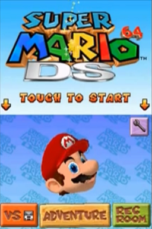

Super Mario 64 DS
This article must comply with the non-Pokémon glitches guideline.
| Super Mario 64 DS | |
|  | |
| Wikipedia link | Super Mario 64 DS |
| Developer(s) | Nintendo |
| Publisher(s) | Nintendo |
| Platform(s) | Nintendo DS |
| Release date(s) | December 2, 2004 (Japan) November 21, 2004 (North America) February 24, 2005 (Australasia) March 11, 2005 (Europe) July 26, 2007 (South Korea) June 21, 2007 (China) |
Super Mario 64 DS is an enhanced remake of the original version of Super Mario 64 on the Nintendo 64, but for the Nintendo DS.
It features 150 stars (30 more than the original) and the introduction of new playable characters including Yoshi, Luigi and Wario.
Contents
'Draw a Picture' glitch
In Super Mario 64 DS, there is a feature in which you can draw a picture on the Touch Screen by touching the face of Mario or Yoshi on the title screen to bring up a Mario, Yoshi or Luigi outline and then touching the green pencil.
If we create many dots in the same position until the ink gauge runs out, then the game may create long lines which form out of the area where we placed the dots. Additionally, segments of the area where we placed the dots appear to 'float together' as lines.
When the picture is moved around the form and position of the long lines can change. You can have it change from a '/\' to a 'V' and sometimes you can bend the lines in a way that gives off the illusion of using a slingshot.
This glitch was apparently documented by a person named Shadow64.
| |
Get on top of the Castle Grounds' roof without the cannon
There are a number of techniques which allow for the player to get on top of the Castle Grounds' roof with all characters.
While their status as a glitch is debatable, these exploits will still be documented on this page.
As Yoshi
Method 1
Get Yoshi to picture 1, below:
Next get Yoshi to the small area of land across the waterfall in the distance of picture 1. Position the camera behind the raised area of land and keep it like that, and then continuously flutter jump backwards until you're high enough to reach the roof of the castle.
As Mario
Method 1
Make a backwards somersault in between the walls in the picture. With skill it is then possible to wall jump in between the walls until Mario reaches the roof of the castle.
As Luigi
Method 1
Perform the same steps as the Yoshi technique, but with Luigi's spin jump from a backwards somersault instead of Yoshi's flutter jump.
As Wario
Method 1
It is possible to get on top of the castle roof by simply slide kicking up the sloped ground on the right side of the castle as Wario, with assistance of a Triple Jump. This method is particularly more difficult than the ones listed for other characters.
Underground pool glitch method
A method to get on top of the roof without 150 stars and not specific to any character is possible if the underground pool glitch is performed before draining the moat. This allows for the player to use the water to reach underneath the cannon, and access it despite the entrance being blocked off. The player is free to fire from the cannon on to the roof without being pushed back from the closed section of the cannon.
Heaven's Portal
A series of glitches in which the player character is projected high into the air. The player will eventually fall. One variation of the glitch involves using a cannon in Bob-omb Battlefield, adjusting the position as so (see picture below) and then holding down Up while flying. The position can be slightly above as well, just so the bottom yellow arrow covers the fence.

Top of Castle Grounds waterfall glitches
By using the Wing Cap on the roof of the castle to approach the waterfall, it is possible for glitches to occur when Mario flies down to the top of the waterfall with the Up-Button on the d-pad held down.
Effect 1. Mario may get trapped on the tip of the waterfall, while continuously moving up and down.
Effect 2. Mario may clip through the waterfall, allowing the player to go out of bounds.
Mirror glitches
This original variation of these glitches were documented by yodelerty, Swordless Link and others.
The mirror room inside the castle has pillars on the right-most and left-most sides of the mirror. By positioning the player between the pillar and the mirror, it is sometimes possible to skip through it, which allows for the player to access the painting to unlock Wario and to go through the door at the other side of the mirror.
The player may also fight Chief Chilly as Yoshi, which leads to some unused dialog (see The Cutting Room Floor)
The left-side of the mirror exploit was documented by Aether, and is easier than the right-side of mirror exploit.
Right-side of mirror exploit:
| |
Left-side of mirror exploit:
| |
Nintendo DS Sleep Mode exploit
This game can be glitched from the Nintendo DS Sleep Mode exploit. Upon entering a new location the game may freeze, but it is possible to bring up the crash debug menu with the buttons combinations L+R+A+Left, release, Down+B, release, Start+Select. For more information on the debug menu, see The Cutting Room Floor.
Underground pool glitch
Go to the position in the first picture below, and run towards the tree. If done correctly, the player will be hanging from slightly underneath the tree, after which the player can move down and drop below the castle grounds.
It may be easiest to perform a dive before approaching the tree as well, until the glitch works.
Notes
- Much of the text in this article is taken from ChickasaurusGL's videos, with permission
- A website known as Mariods.tk was once a good source for Super Mario 64 DS glitches. Unfortunately it is no longer around, although there is still a community of Super Mario 64 DS glitchers on YouTube such as "Really Tall" and "Aether" who cover Super Mario 64 DS glitches other than the ones listed in this article.
- There is a curiosity in the game in which if the player has over 150 stars, rather than exactly 150 stars they won't get the final Bowser's alternative text or the larger penguin in Cool, Cool Mountain.